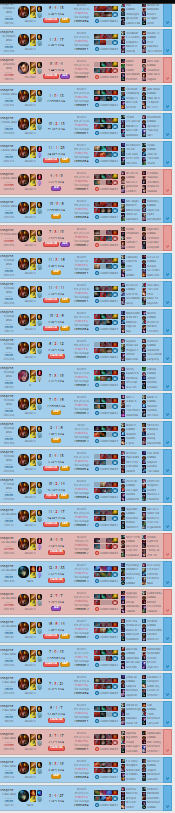

2021 foi mais tranquilo de pegar diamante, quando eu peguei de Jarvan acredito que ja tinha pego de Twitch no mesmo ano.

Todas as vezes que peguei diamante foi da mesma forma, um dia eu acordo muito inspirado pra jogar e jogo diversas partidas seguidas, e acaba dando certo igual o print do lado